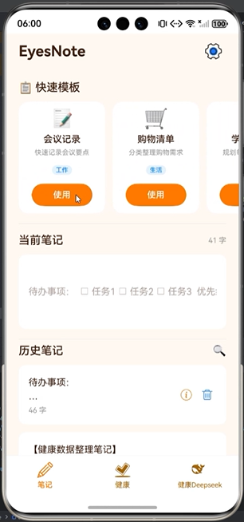
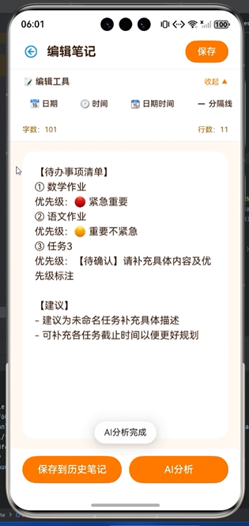
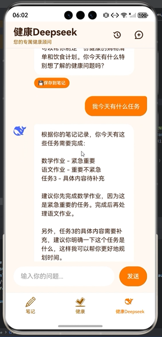
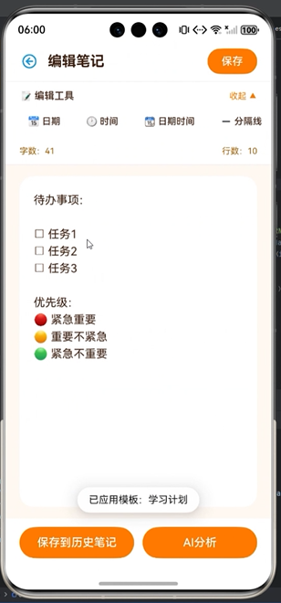
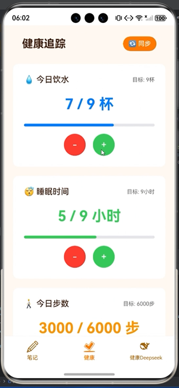
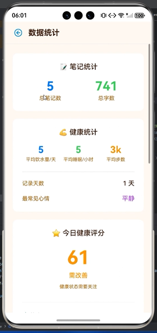
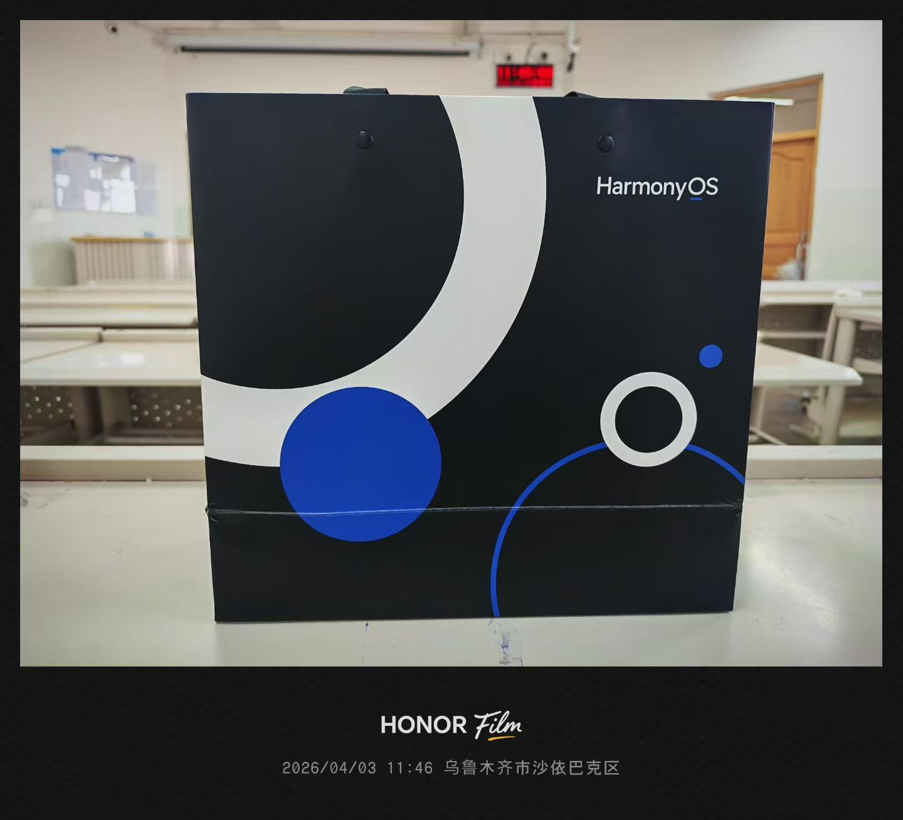

Harmony EyesNote 眨眼笔记
鸿蒙 NEXT 上的笔记 + 健康 + AI 三合一效率工具
项目介绍
Harmony EyesNote 是一款基于 HarmonyOS NEXT 的原生应用，从快速笔记工具逐步进化成一个集 AI 智能整理、健康数据中心、统计看板、系统级备份扩展于一体的综合效率工具。在单个 App 内即可完成记录 → 分析 → 洞察 → 备份的完整闭环。开发环境为 DevEco Studio 5.0+，支持真机和 NEXT 模拟器运行。
技术栈
我的贡献
- 独立完成项目从需求分析、UI/UX 设计到前后端开发全流程
- 实现双栏笔记工作区、智能模板系统、快速工具条等核心笔记功能
- 集成 DeepSeek API，实现笔记自动分类与营养师模式等 AI 功能
- 开发健康数据中心，追踪饮水、睡眠、步数、心情等指标并生成评分与趋势分析
- 实现统计看板，支持多维度数据对比、导出 JSON 备份
- 实现动态主题系统，支持多套预设主题与自定义调色板
- 实现系统级备份扩展 EntryBackupAbility，支持 HarmonyOS Backup Kit
核心功能
- 双栏笔记视图 + 智能模板 + AI 自动分类整理
- DeepSeek AI 营养师模式 — 识别饮食关键词生成膳食建议
- 健康追踪：饮水、睡眠、步数、心情，自动生成评分与趋势
- 统计看板：笔记概览、健康均值、周对比、心情频率分析
- 动态主题切换 + 自定义调色板，实时同步全局
- 系统级备份扩展 + JSON 数据导出
- 尝试对接 HarmonyOS Health Kit，但华为尚未开放该功能，仅做了接口预留
项目地址
项目预览
点击图片可放大查看





个人总结
这个项目是我爸鼓励我做的，说做出来了给我买个华为手表 GT5。其实上大学以后我就很少和父母住在一起了，一直在奶奶家住，那次回家见我爸妈之前，已经一整年没见过面了。
项目功能挺多的，从笔记到 AI 到健康到主题到备份，算是把鸿蒙开发的各种能力都摸了一遍，一个人全栈做完还是蛮有成就感的。不过我做这个的时候鸿蒙还没完全开源，还是 1.0 版本，IDE 的开发工具和 API 文档不太完善，中文搜鸿蒙开发的内容，搜出来的都是那种特别基础的教学，看来看去就那三样组件，深一点的东西很少。说白了，国内鸿蒙社区氛围就是这样，框架大版本迭代太频繁，开发者也很迷茫。
做这个软件的时候发现了华为有个校园挑战赛，我第三期就关注了，但那时候开发完了发现还要写一大堆报告，觉得好麻烦就放弃了。拖到第四期才正式参加，进了比赛群，里面好多大佬，有些都已经上架应用了，觉得他们好厉害。在学校整理好报名材料提交了，第一次参赛拿了个优秀奖，看群里有人被淘汰了，优秀奖也不是人人都有嘛，那我还是可以的，嘿嘿。
华为校园挑战赛优秀奖的奖品，不是很贵重，但我很开心，也算是这个项目圆满结束啦 🎉

.jpg)